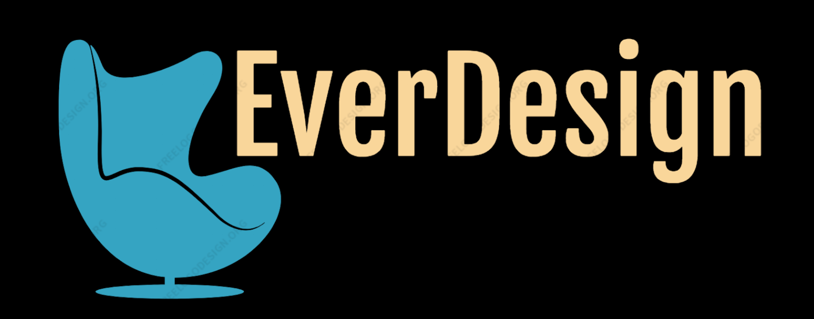

<mat-sidenav-container class="sidenav-container">
  <mat-sidenav
  #drawer
  class="sidenav"
  fixedInViewport="true"
  [attr.role]="(isHandset$ | async) ? 'dialog' : 'navigation'"
  [mode]="(isHandset$ | async) ? 'over' : 'side'">
  <mat-toolbar>
    <button type="button" aria-label="Toggle sidenav" (click)="drawer.toggle()">
      <mat-icon aria-label="Side nav toggle icon">menu</mat-icon>
      <div>Menu</div>
    </button>
  </mat-toolbar>
  <mat-nav-list>
    <a mat-list-item href="#" *ngIf="router.url!='/'" [routerLink]="''" (click)="resetCategories() ; drawer.toggle()" class="noSelected">Accueil</a>
    <a mat-list-item href="#" *ngFor="let cat of getCategories()" (click)="selectedCategory(cat.id, $event) ; drawer.toggle()" [ngClass]="cat.id===itemsServices.getCategoryIdSelected()? 'selected' : 'noSelected'">{{cat.name}}</a>
    <a mat-list-item href="#" *ngIf="router.url!='/contact'" [routerLink]="'/contact'" class="noSelected" (click)="resetCategories() ; drawer.toggle()">Nous Contacter</a>
  </mat-nav-list>
</mat-sidenav>

<mat-sidenav
#cnxMenu
class="sidenav"
[attr.role]="(isHandset$ | async) ? 'dialog' : 'navigation'"
[mode]="'over'"
position="end">
<mat-toolbar>
  <button type="button" aria-label="cnxMenu" (click)="cnxMenu.toggle()">
    <mat-icon aria-label="Side nav toggle icon">menu</mat-icon>
    <div>Compte</div>
  </button>
</mat-toolbar>
<mat-nav-list>
  <a mat-list-item href="#" [routerLink]="'/caddy'" (click)="cnxMenu.toggle()">Mon panier</a>
  <a mat-list-item href="#" (click)="cnxMenu.toggle()" *ngIf="!getStatusConnexion()">Créér un compte</a>
  <a mat-list-item href="#" (click)="cnxMenu.toggle()" *ngIf="!getStatusConnexion()">Me connecter</a>
  <a mat-list-item href="#" (click)="cnxMenu.toggle()" *ngIf="getStatusConnexion()">Mon compte</a>
  <a mat-list-item href="#" (click)="cnxMenu.toggle()" *ngIf="getStatusConnexion()">Mes commandes en cours</a>
  <a mat-list-item href="#" (click)="cnxMenu.toggle()" *ngIf="getStatusConnexion()">Historique de mes commandes</a>
  <a mat-list-item href="#" (click)="cnxMenu.toggle()" *ngIf="getStatusUser() && (getStatusUser() === 5 || getStatusUser() === 6)">Gestion administrative</a>
  <a mat-list-item href="#" (click)="cnxMenu.toggle()" *ngIf="getStatusConnexion()">Deconnexion</a>
</mat-nav-list>
</mat-sidenav>

<mat-sidenav-content>
  <mat-toolbar class="mainToolbar">
    <button
    type="button"
    aria-label="Toggle sidenav"
    (click)="drawer.toggle()">
    <mat-icon aria-label="Side nav toggle icon" *ngIf="!drawer.opened">menu</mat-icon>
    <div *ngIf="!drawer.opened">Menu</div>
  </button>
  
  <button
  type="button"
  aria-label="cnxMenu"
  (click)="cnxMenu.toggle()" [ngClass]="!cnxMenu.opened ? '':'invisibility'">
  <mat-icon aria-label="cnxMenu">person</mat-icon>
  <div>Compte</div>
</button>
</mat-toolbar>
<section class="header"><app-header></app-header></section>
<router-outlet></router-outlet>
<footer>
  <a mat-list-item href="#" [routerLink]="'/contact'" class="" (click)="resetCategories()">Nous Contacter</a>
  &nbsp;<span>|</span>&nbsp;
  <a mat-list-item href="#" [routerLink]="'/informations/CGV'" class="" (click)="resetCategories()">CGV</a>
  &nbsp;<span>|</span>&nbsp;
  <a mat-list-item href="#" [routerLink]="'/informations/ML'" class="" (click)="resetCategories()">Mentions Légales</a>
</footer>
</mat-sidenav-content>
</mat-sidenav-container>

